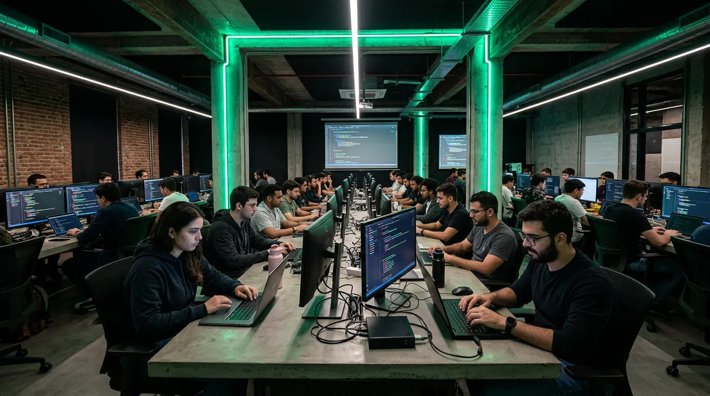
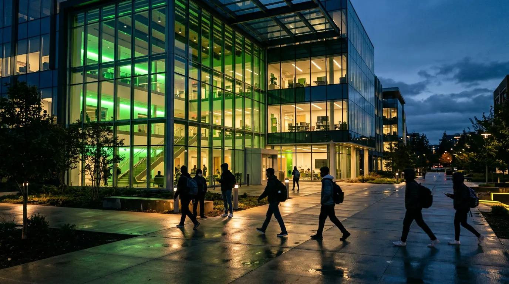

결과가
증명합니다
코드랩 졸업생들은 국내외 주요 테크 기업에서
활약하고 있습니다. 숫자가 말해주는 교육의 질.
0%
수료생 취업률
₩0만
평균 초봉
0명
누적 졸업생
0개
파트너 기업
입학부터 취업까지,
체계적인 여정
적성 진단 & 상담
온라인 코딩 적성 테스트와 1:1 심층 상담을 통해
당신에게 맞는 트랙을 함께 찾아갑니다.
트랙 선택 & 입학
Frontend, Backend, Data Science, AI/ML 중
목표에 맞는 트랙을 선택하고 학습을 시작합니다.
집중 학습 & 프로젝트
매일 8시간 풀타임 몰입 학습. 실무 프로젝트와
코드 리뷰를 통해 실전 역량을 키웁니다.
포트폴리오 빌딩
실제 서비스를 기획·개발하며 포트폴리오를 완성.
GitHub, 기술 블로그, 이력서까지 토탈 관리.
취업 지원 & 매칭
52개 파트너 기업 채용 연계, 모의 면접,
연봉 협상까지. 취업 후 3개월 팔로업.
현장 경험이 곧 교육입니다
김서진
ex-Naver · Frontend Architect
네이버 검색 프론트엔드 팀에서 7년간 대규모 서비스를 구축한 경험을 바탕으로, 실무에서 바로 쓸 수 있는 React/Next.js 커리큘럼을 설계했습니다.


박준호
ex-Kakao · Backend Lead
카카오에서 일일 1억 건 이상의 트래픽을 처리하는 백엔드 시스템을 설계한 경험으로, 확장 가능한 아키텍처의 원리를 가르칩니다.
최적의 몰입 환경을
만들었습니다
듀얼 모니터 워크스테이션, 24시간 개방 라운지,
팀 프로젝트룸. 코드에만 집중할 수 있는 공간.
목표에 맞는 트랙을 선택하세요
4개 전문 트랙, 각 트랙별 현직 개발자 커리큘럼.
이론보다 실무, 과제보다 프로젝트.
Frontend Engineering
React, Next.js, TypeScript로 프로덕션 레벨의 웹 애플리케이션을 만듭니다. 컴포넌트 설계부터 성능 최적화까지.
Backend Engineering
Node.js, Python, AWS로 확장 가능한 서버를 설계합니다. DB 설계부터 CI/CD까지 풀스택 백엔드.
Data Science
Python, SQL, Pandas, Tableau로 데이터를 읽고 인사이트를 도출합니다.
AI / Machine Learning
TensorFlow, PyTorch로 ML 모델을 설계하고 서비스에 배포합니다.
수강료 안내
수강생이 직접 전하는 이야기
이하은
Frontend · 12기 졸업
"비전공자에서 네이버 프론트엔드 개발자가 되기까지, 코드랩의 커리큘럼과 멘토링이 결정적이었습니다. 특히 코드 리뷰 문화가 실력 성장에 큰 도움이 됐어요."
현 Naver — Frontend Developer
정민수
Backend · 10기 졸업
"이직을 준비하면서 시작한 파트타임 과정이었는데, 3개월 만에 카카오 백엔드 팀 합격 통보를 받았습니다. 시스템 설계 면접 준비가 정말 체계적이었어요."
현 Kakao — Backend Engineer
최경아
Data Science · 11기 졸업
"마케팅 직군에서 데이터 사이언티스트로 완전히 커리어를 전환했습니다. SQL부터 머신러닝까지 실무 데이터로 배울 수 있어서 좋았어요."
현 Toss — Data Analyst
윤호진
AI/ML · 9기 졸업
"물리학 석사 배경에서 AI 엔지니어로 전향하는 과정을 코드랩이 함께 해주었습니다. 논문 읽기부터 모델 배포까지 원스톱이에요."
현 Line AI — ML Engineer
자주 묻는 질문
네, 가능합니다. 부트캠프 과정은 프로그래밍 기초부터 시작하며, 사전 적성 테스트를 통해 개인별 학습 로드맵을 설계합니다. 비전공자 비율이 전체 수강생의 62%를 차지합니다.
부트캠프(풀타임)는 월~금 09:00~18:00, 파트타임은 월·수·금 19:00~22:00에 진행됩니다. 1:1 멘토링은 멘토와 일정을 조율하여 유연하게 진행 가능합니다.
포트폴리오 빌딩 → 이력서/GitHub 최적화 → 모의 기술 면접 (주 2회) → 52개 파트너 기업 채용 연계 → 연봉 협상 코칭까지 지원합니다. 수료 후 3개월간 취업 팔로업을 제공합니다.
최대 12개월 무이자 할부를 지원하며, 국민내일배움카드 사용 시 최대 80% 교육비 지원이 가능합니다. 상담 시 개인 상황에 맞는 최적의 결제 방법을 안내드립니다.
강남역 3번 출구 도보 5분, 강남대로 512 코드랩빌딩 8-10층에 위치합니다. 듀얼 27인치 모니터 워크스테이션, 팀 프로젝트룸 4개, 24시간 개방 라운지를 갖추고 있습니다.

다음 커밋의 주인공은
당신입니다
2026년 3월 기수 모집 중. 무료 상담으로 시작하세요.
적성 테스트부터 트랙 추천까지, 30분이면 충분합니다.